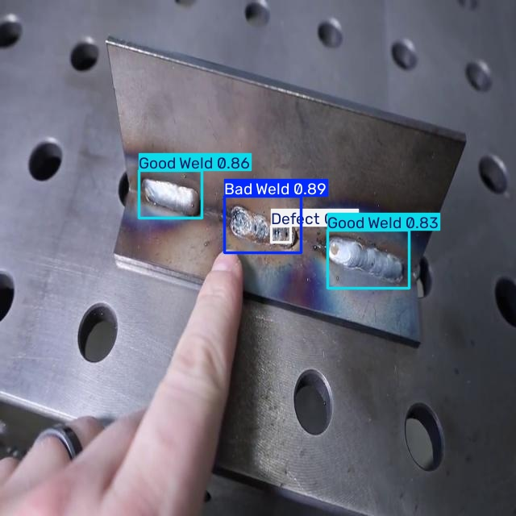
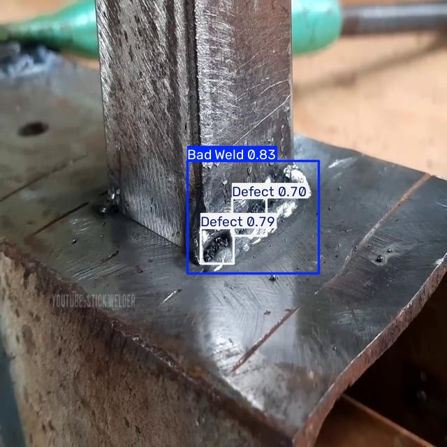
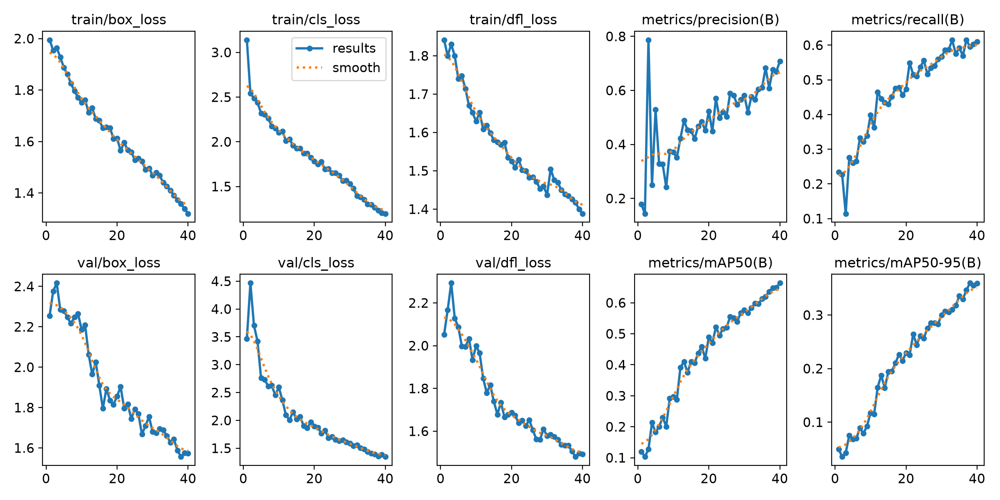

Applied Deep Learning · Maritime & Industrial Welding QC
SnapQC: Deteksi Visual Cacat Las dengan Model Deep Learning Mandiri (YOLO11n → ONNX)
Model deteksi objek mandiri yang dilatih pada 2.028 foto las publik berlisensi CC0 (5.686 label kotak) menggunakan PyTorch CUDA di NVIDIA RTX 5060, diekspor ke format ONNX 10,13 MB untuk inferensi lokal tanpa API cloud, serta dilengkapi antarmuka kamera & verifikasi inspector manusia (Human-in-the-Loop).
01 · Hasil Prediksi Nyata pada Foto Uji Terpisah (Unseen Test Set)
Bukti Inferensi Model pada Foto Las yang Belum Pernah Dilihat Saat Pelatihan
Kedua gambar di bawah berasal dari held-out test split (126 foto terpisah). Model mampu memisahkan jalur las baik (Good Weld), jalur las bermasalah (Bad Weld), serta menandai titik cacat lokal (Defect) dalam satu frame.


02 · Evaluasi Kuantitatif & Analisis Rekayasa
Metrik Jujur per Kelas dan Rencana Peningkatan v2
| Kelas | Jumlah Label Latih | AP@50 Validasi (283 foto) | AP@50 Test Terpisah (126 foto) | Catatan Evaluasi |
|---|---|---|---|---|
| Bad Weld | 1.089 | 74,6% | 80,2% | Deteksi sangat kuat untuk skrining cepat sambungan las bermasalah. |
| Good Weld | 1.896 | 77,0% | 71,5% | Konsisten memisahkan jalur las normal dari area cacat. |
| Defect (cacat mikro) | 1.598 | 42,8% | 27,4% | Cacat berukuran sangat kecil (20–40 px) pada input 640px masih rawan terlewat; solusi v2 adalah tiling resolusi tinggi (SAHI) & Active Learning. |


03 · Batas Bukti & Transparansi Wawancara
v0.2.0-welding-v1): Model models/snapqc-welding-v1.onnx benar-benar dilatih sendiri oleh Miftahul Ikhsan Tahir menggunakan dataset publik CC0 rikkarth/welding-defect-object-detection (1.619 latih / 283 validasi / 126 uji terpisah) pada GPU NVIDIA GeForce RTX 5060. Seluruh angka metrik di atas berasal langsung dari berkas models/metrics-v1.json tanpa pembulatan berlebihan.Batas Operasional: SnapQC adalah asisten skrining visual awal (Human-in-the-Loop) dan tidak menggantikan pengukuran fisik, pengujian NDT (MPI/UT/RT), maupun persetujuan surveyor class/flag. Kelas korosi lambung & coating (dataset MaVeCoDD) disiapkan untuk fase pelatihan berikutnya (v2).